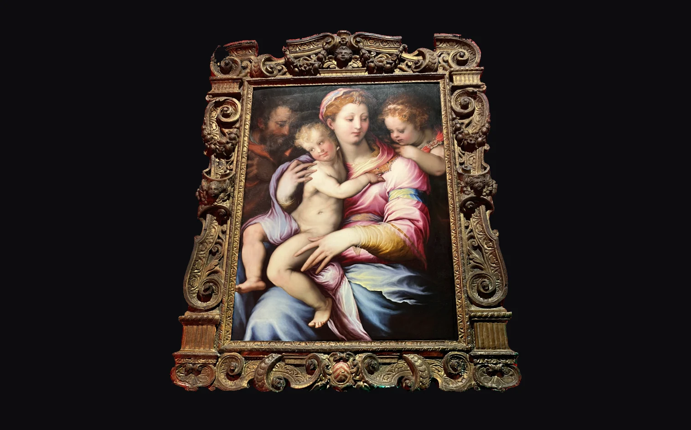

Snap3d Viewer
A WebGL2 viewer for SH-texture surface bundles. It marches a parallax-occlusion ray through a baked height atlas to resolve each fragment's uv, then evaluates a spherical-harmonic fit of the view direction in the surface's local frame. There is no lighting model and no material — the SH texture is the appearance.

The still above is a frame this viewer drew — pick another subject below it. Press
the button and the same scene comes back live, one draw call, rendered by the very
dist/viewer.js the snippet below loads — then turn the frame and watch
the gilding: the highlights move because each texel stores how it reflects in every
direction, not a colour.
Use it from a script tag
<canvas id="canvas" style="width:100%;height:480px"></canvas>
<script src="https://teo646.github.io/snap3d-viewer/dist/viewer.js"></script>
<script>
const viewer = new Snap3dViewer(canvas, 'my_run/config.json');
</script>The loop is demand-driven: it draws while something is changing and stops when the image settles, so a still frame costs nothing to hold.
Or as a module
import { Snap3dViewer } from 'https://teo646.github.io/snap3d-viewer/dist/viewer.mjs';
const viewer = new Snap3dViewer(canvas, 'my_run/config.json');
await viewer.ready;
The <script> build defines Snap3dViewer as the
constructor itself, with the rest of the API on it as statics —
Snap3dViewer.OrbitControls, Snap3dViewer.loadBundle,
Snap3dViewer.VERSION.
What an asset is
Four files, in formats the browser already reads: a config.json, a
.glb carrying positions, UVs and indices, and two .ktx2
textures — the SH coefficient atlas as an RGBA16F array, one layer per coefficient,
and a two-channel relief map holding displacement and atlas coverage. Point the
viewer at the config.json; the rest is fetched from alongside it. There
is no conversion step: this is the pipeline's export stage directory as it stands.
Requirements
- WebGL2 — 2D array textures, 16-bit float textures, 32-bit indices.
DecompressionStream, for the textures' ZLIB supercompression.- Chrome 80+, Firefox 113+, Safari 16.4+. There is no WebGL1 fallback.